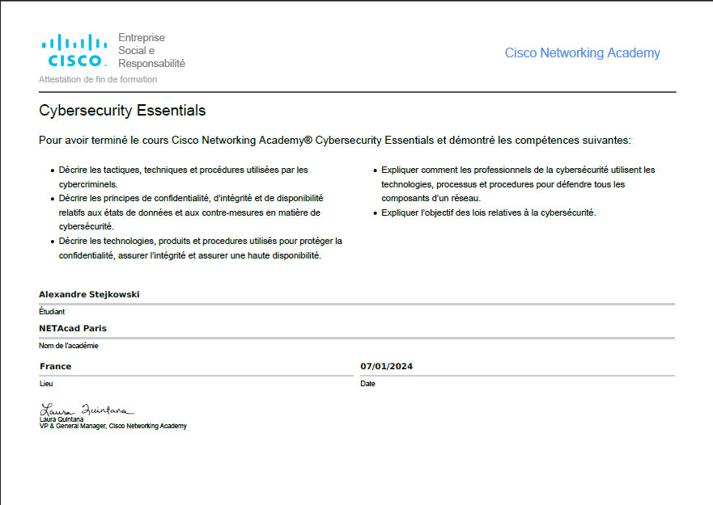
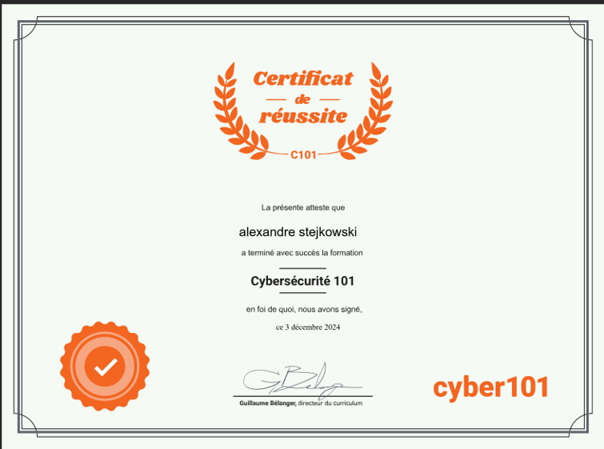
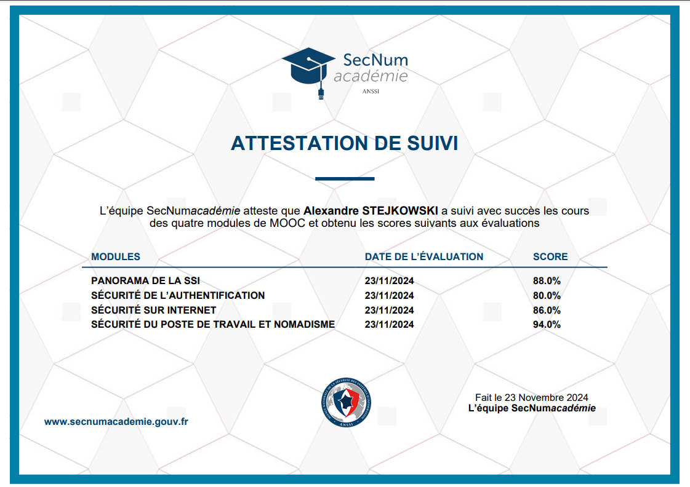
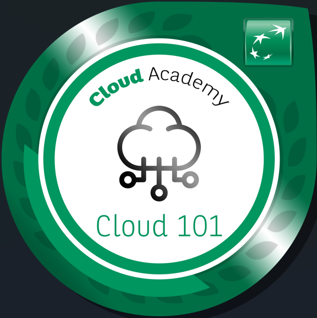
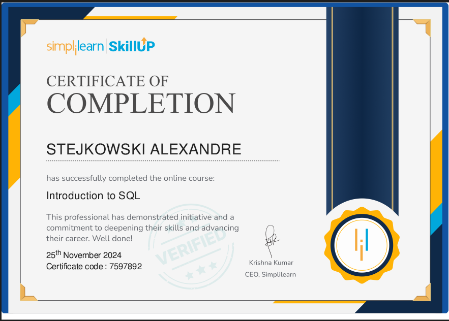
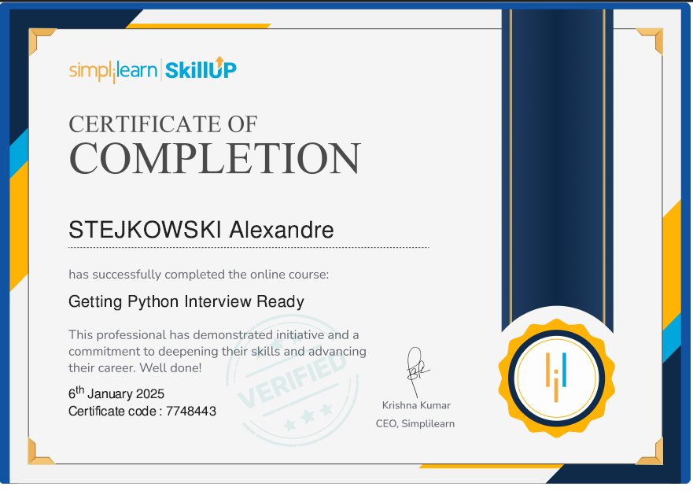
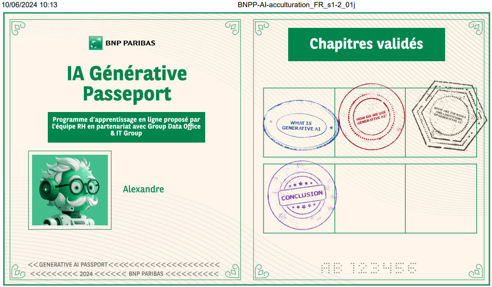
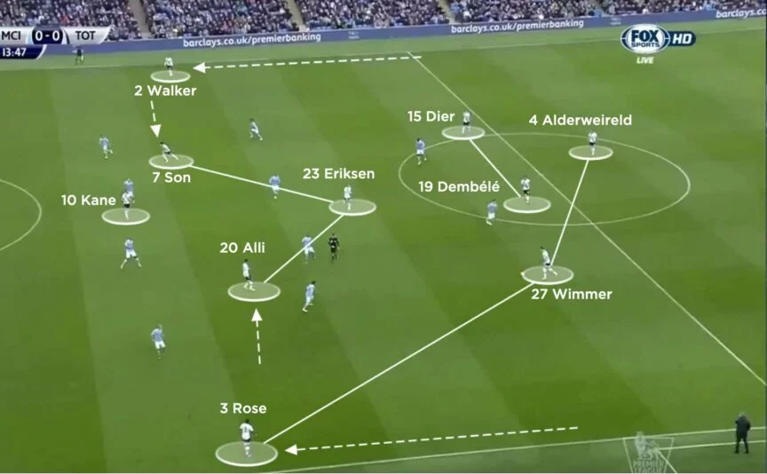
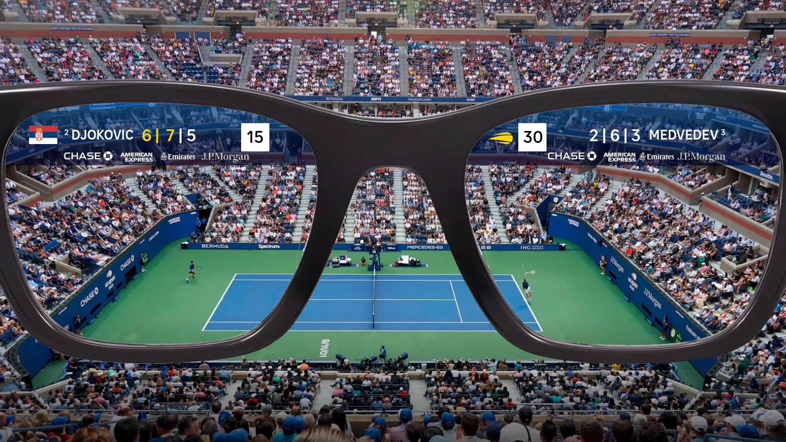

Alexandre
Stejkowski
Alternant Analyste SOC · Futur Administrateur d'infrastructures sécurisées.
Je traque les menaces, analyse les vulnérabilités et sécurise les systèmes.
Ce que j'ai accompli
- Traitement de tickets SOC : analyse et réponse aux incidents de phishing
- Création et amélioration de règles de détection
- Identification et analyse de vulnérabilités via Hackuity
- Analyse des flux réseau et gestion des règles firewall Fortigate
- Développement de dashboards sécurité (Power BI, API Wiz, GLPI, SoSafe)
- Automatisation des tests d'intrusion via Pentera
- Support utilisateurs, gestion de parc informatique et comptes Active Directory
- Gestion des incidents et demandes via ServiceNow ITSM · Outil Pirus
- Formation en cybersécurité et IA générative
- Projet câble de sécurité MacBook
Mon arsenal technique
Mon parcours académique
La Tournelle
La Tournelle
Ce que j'ai construit
Installation et configuration d'une distribution Debian 12 en environnement virtualisé.
Déploiement d'un serveur web Apache sur Debian — hébergement et configuration complète.
Installation complète d'une stack LAMP (Linux, Apache, MySQL, PHP) pour hébergement web.
Déploiement complet d'un environnement Windows Server 2022 avec gestion des rôles.
Configuration d'un AD sur Windows Server — gestion des utilisateurs, groupes et GPO.
Installation de GLPI sur Debian 12 pour la gestion du parc informatique et des tickets.
Installation et prise en main de Docker — conteneurisation d'applications et gestion des images.
Audit de sécurité avec MALLET — analyse des flux réseau et identification de vulnérabilités.
Installation et configuration d'éléments réseau dans GNS3 — simulation d'infrastructure complète.
Gestion des droits et permissions utilisateurs sur Ubuntu avec chmod, chown et groupes.
Mise en place d'un reverse proxy haute disponibilité pour la distribution de charge.
Création de la page vitrine française et anglaise de la plateforme Disney+ — responsive et bilingue.
Site web permettant de consulter les sports, le calendrier des épreuves et les résultats des JO 2028.
Application Java de gestion de véhicules et propriétaires — CRUD complet avec affichage console.
Poubelle intelligente développée en C sur carte ESP32 S2 — capteurs, connectivité et logique embarquée.
Script Python affichant le classement de ton club et le résultat du dernier match en temps réel via API.
Installation et maîtrise de l'environnement Kali Linux — prise en main des outils offensifs et défensifs.
Mes certifications

Validation des compétences fondamentales en cybersécurité selon le référentiel CISCO.

Validation avancée des compétences en cybersécurité — attaques, défenses et bonnes pratiques.

Formation de l'ANSSI sur les bonnes pratiques de sécurité, la protection des données et la prévention des cyberattaques.

Certification validant les compétences en sécurité offensive avec Kali Linux.

Certification validant les compétences en conception, déploiement et maintenance d'applications cloud AWS.

Validation des compétences en conception et maintenance de bases de données relationnelles.

Validation des compétences avancées en programmation Python.

Certification sur l'utilisation de l'IA générative pour automatiser des workflows Python.

Certification sur les concepts et applications de l'intelligence artificielle générative.
L'IA dans le sport
Outils utilisés :

L'IA développée par Google et Liverpool permet d'entraîner les joueurs à mieux se positionner, tirer et réagir aux contre-offensives en temps réel.
Lire l'article →L'IA propose des programmes d'entraînement adaptés aux performances quotidiennes grâce à des capteurs intégrés dans les vêtements des athlètes.
Lire l'article →
L'IA offre aux fans des contenus immersifs et des analyses sportives en temps réel, augmentant leur engagement avec les équipes.
Lire l'article →Travaillons ensemble
Recherche une alternance cybersécurité de 2 ans à partir de la rentrée 2026.
Rythme : 2 semaines cours / 4 semaines entreprise.